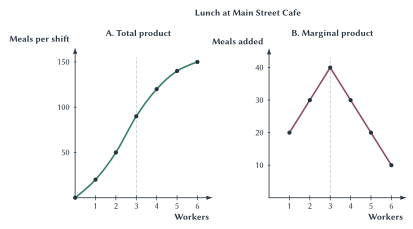
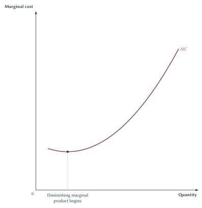
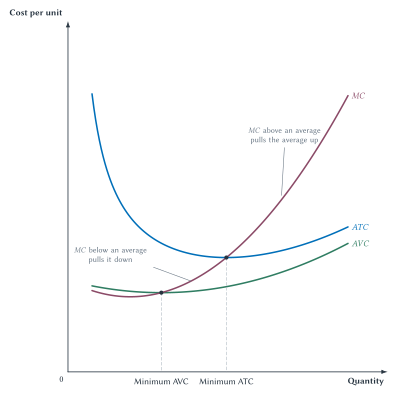
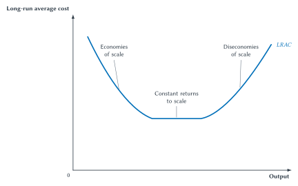
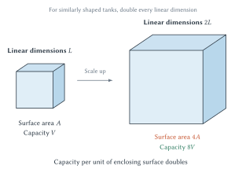

Chapter 13
Costs and Production
Opportunity cost, production limits, and the relationship between marginal and average values explain where firms’ cost curves come from.

Suppose a rich uncle gives you $1 million and encourages you to start a business. At the end of the first year, your accountant reports that the business earned a $50,000 profit. Every bill has been paid. You might be ready to celebrate.
Then an economist asks an annoying question: What else could you have done with the $1 million?
Suppose you could have earned 5 percent in another investment with similar risk. That alternative would also have paid $50,000. Your business has earned an accounting profit of $50,000, but it has not made you better off than the next-best use of your money. Its economic profit is zero.
Nothing is wrong with the accountant’s calculation. The accountant and the economist are answering different questions. The accountant asks whether revenue exceeded the costs recorded by the business. The economist asks whether the business used your resources better than their next-best alternatives.
That second question carries opportunity cost into the study of firms. A business uses money, time, buildings, workers, equipment, and raw materials. Some of those costs appear on invoices. Others are opportunities the owner gives up. All of them matter when deciding whether a business is truly creating value.
This chapter begins with those two ways of measuring profit. It then enters the kitchen of Main Street Cafe to show where cost curves come from. The curves are not arbitrary shapes drawn by economists. They summarize what happens when workers must share a fixed kitchen, when specialization improves output, when crowding reduces it, and when a firm has more time to change the scale of its operation.
Economic Cost And Two Kinds Of Profit
An explicit cost requires a direct payment. Wages, rent, electricity, ingredients, insurance, and interest paid on a loan are explicit costs. They enter the firm’s accounting records.
An implicit cost is an opportunity cost that does not require a direct payment. If you use your own money in a business, you give up the return that money could have earned elsewhere. If you work in your own business without paying yourself a salary, you give up the salary you could have earned in another job. If the business uses a building you own, you give up the rent someone else might have paid for it.
Economists include both kinds of cost because both involve giving something up.
Case Study
The Rich Uncle And Two Kinds Of Profit
A rich uncle gives you an unrestricted $1 million and encourages you to start a business. After paying every explicit operating expense, the business reports a $50,000 accounting profit in its first year. You could instead have earned 5 percent, or $50,000, in a comparably risky alternative.
The $50,000 forgone return is the implicit opportunity cost of your financial capital. Subtracting it leaves zero economic profit. The accounting calculation is correct. The economic calculation asks an additional question: Did the business outperform the next-best use of the owner’s resources?
In symbols, the two calculations are:
\[ \text{Accounting profit} = TR - \text{explicit costs} \]
and
\[ \text{Economic profit} = TR - \text{explicit costs} - \text{implicit costs}. \]
Here, \(TR\) means total revenue, the money the firm receives from sales. The equations simply say that accounting profit subtracts recorded business costs, while economic profit also subtracts the value of opportunities the owner gives up.
The three possible outcomes in Table 13.1 hold the implicit cost at $50,000 and change only the business’s accounting profit.
| Accounting Profit | Implicit Cost Of Capital | Economic Profit | What It Means |
|---|---|---|---|
| $80,000 | $50,000 | $30,000 | The business outperforms the alternative. |
| $50,000 | $50,000 | $0 | The business performs as well as the alternative. |
| $30,000 | $50,000 | -$20,000 | The business earns an accounting profit but underperforms the alternative. |
Table 13.1. Accounting profit can be positive even when economic profit is zero or negative. Economic profit compares the business with the next-best use of the owner’s resources.
The third row is especially important. The business takes in $30,000 more than its recorded expenses, so accounting profit is positive. Yet the owner gives up a $50,000 alternative return. The business leaves the owner $20,000 worse off than the alternative, so economic profit is -$20,000.
A business can pay every bill, report a profit, and still be a poor use of the owner’s resources.
The $1 million itself is not automatically a one-year cost. The owner still has an asset invested in the business. The annual implicit cost is the return the owner gives up during that year. If the firm had borrowed the $1 million and paid $50,000 in interest, the interest would instead be an explicit cost because money would actually be paid to the lender.
Key Point
Accounting And Economic Profit Answer Different Questions
Accounting profit subtracts explicit costs from revenue. Economic profit also subtracts implicit opportunity costs. Neither measure corrects an error in the other. They are designed for different purposes.
Zero Economic Profit Includes A Normal Return
The return needed to keep an owner’s resources in their current use is called normal profit. It is part of economic cost.
In the rich-uncle example, the normal return on the owner’s capital is $50,000. When the business earns that amount after paying its explicit expenses, economic profit is zero. The owner has not worked for nothing. The business has covered the opportunity cost of the owner’s money.
Common Mistake
Zero Economic Profit Does Not Mean The Owner Earns Nothing
Zero economic profit means the business covers every explicit cost and every implicit opportunity cost, including a normal return on owner-supplied resources. This distinction becomes central in Chapter 14, where entry and exit push long-run economic profit toward zero.
Historical Note
Armen Alchian And Opportunity Cost
In his essay “Cost,” Armen Alchian emphasized that cost is forward-looking. The useful question is not merely what money was spent in the past. It is what valuable alternative must now be given up to make a choice. That principle applies to a student’s time, an owner’s money, a restaurant’s building, and a factory’s machinery.1
With economic cost defined, the next question is where a firm’s recorded and opportunity costs come from. To answer it, we need to look inside production.
Production In The Short Run
A firm combines inputs such as labor, capital, energy, land, and materials to produce output. The relationship between inputs and the greatest output they can produce with current knowledge is called a production function. We will study that relationship with a restaurant rather than an equation.
Consider Main Street Cafe during its lunch shift. The kitchen, ovens, preparation stations, refrigeration, and floor space are already in place. The owner can schedule more or fewer workers, but cannot enlarge the kitchen while lunch is being served.
This is what economists mean by the short run: a period in which at least one productive input cannot be changed. The short run is defined by a constraint, not by a clock. A lunch shift is short run for the cafe because the kitchen is fixed during the shift, not because economists have declared that a few hours is always short.
The long run is the period in which the firm can adjust all productive inputs, including plant size. A restaurant may be able to expand its kitchen in months. A semiconductor manufacturer may need years to plan and build a new fabrication facility. The relevant amount of time depends on the production process and the decision being considered.2
Quick Concept
The Short Run Is Defined By A Constraint, Not A Clock
The short run is the period in which at least one input is fixed. At Main Street Cafe, kitchen capacity is fixed while labor can change. How many days, months, or years that lasts depends on what the firm produces and which input it wants to adjust.
Total Product And Marginal Product
Main Street Cafe hires identical workers for a lunch shift. Worker quality, effort, menu, ingredients, technology, and kitchen capital remain unchanged. Only the number of workers changes.
Total product is the total output produced. In Table 13.2, it is the number of meals completed during the shift.
Marginal product is the additional output created by adding one more unit of an input. Here it is the number of additional meals produced when the cafe adds one worker.
| Workers | Meals Per Shift | Marginal Product Of Worker |
|---|---|---|
| 0 | 0 | – |
| 1 | 20 | 20 |
| 2 | 50 | 30 |
| 3 | 90 | 40 |
| 4 | 120 | 30 |
| 5 | 140 | 20 |
| 6 | 150 | 10 |
Table 13.2. Main Street Cafe’s short-run production schedule. Meals per shift are total product. Marginal product is the number of meals added by the next worker while the kitchen remains fixed.
Read the table by comparing consecutive rows. One worker produces 20 meals. Two workers produce 50, so the second worker adds 30 meals. Three workers produce 90, so the third worker adds 40 meals.
The verbal rule is enough: subtract the earlier total from the new total to find what the additional worker added. The equation is only a shorter way to write that instruction:
\[ MP_n = TP_n - TP_{n-1}. \]
The relationship also works in reverse. If two workers produce 50 meals and the third worker adds 40, then three workers produce 90 meals. In words, add the additional worker’s marginal product to the previous total:
\[ TP_n = TP_{n-1} + MP_n. \]
The equations are not new ideas. They restate subtraction and addition.
Specialization First, Crowding Later
At first, marginal product rises. One worker may have to take orders, prepare ingredients, cook, assemble meals, and hand them to customers. A second and third worker allow tasks to be divided. One person can stay at the grill while another handles preparation and another assembles orders. Specialization increases the additional output created by each new worker.
After the third worker, marginal product begins to fall. The fourth worker still raises total output from 90 to 120 meals, but adds only 30. The fifth adds 20, and the sixth adds 10.
The later workers are not assumed to be lazy or less skilled. They are identical to the earlier workers. The problem is that more workers must share the same ovens, counters, storage, and floor space. They wait for equipment, get in one another’s way, and have less fixed capital available per worker.
Marginal product belongs to a worker in a production setting, not to the worker alone. The sixth worker is not a “10-meal worker.” With identical workers, the fixed kitchen makes the sixth position a 10-meal position.
This is diminishing marginal product: as more of a variable input is added to fixed inputs, the marginal product of the variable input eventually falls.
Figure 13.1. Total output can keep rising while marginal product falls. At Main Street Cafe, specialization initially raises each additional worker’s contribution. After the third worker, additional workers must share the fixed kitchen, so marginal product falls even though total meals continue to rise.
Common Mistake
Diminishing Marginal Product Does Not Mean Worse Workers
Hold worker quality and effort constant. Marginal product eventually falls because additional workers must share a fixed kitchen, equipment, and workspace. The amount of capital available per worker falls and congestion increases.
Marginal product does not have to rise before it falls. In some production processes, it may diminish beginning with the first additional worker. The Main Street Cafe schedule includes an early gain from specialization because that pattern is common and helps explain the familiar U-shaped marginal-cost curve. The central principle is only that marginal product eventually falls when more of a variable input must work with fixed inputs.
Practice: Work In Both Directions
A bike-repair shop provides a second way to practice the relationship without adding another curve. During one workday, repair stations and tools are fixed while the number of mechanics can change. Fill in each question mark in Table 13.3 before reading further.
| Mechanics | Bikes Repaired Per Day | Marginal Product Of Mechanic |
|---|---|---|
| 0 | 0 | – |
| 1 | 8 | ? |
| 2 | ? | 12 |
| 3 | 29 | ? |
| 4 | ? | 6 |
| 5 | 38 | ? |
Table 13.3. Use addition and subtraction to complete the production schedule. Subtract consecutive totals to find marginal product. Add marginal product to the previous total to recover a missing total.
The first mechanic’s marginal product is 8. The second mechanic adds 12 bikes, so total product with two mechanics is 20. The third mechanic’s marginal product is \(29 - 20 = 9\). Adding the fourth mechanic’s marginal product of 6 gives a total of 35. The fifth mechanic therefore adds \(38 - 35 = 3\) bikes.
Marginal product begins falling after the second mechanic. Total product still rises because each later marginal product remains positive. A smaller addition is still an addition.
From Production To Cost
The production schedule tells us how many meals workers can make. To turn production into cost, attach prices to the inputs.
Main Street Cafe assigns $300 of fixed kitchen cost to each lunch shift. Each worker costs $120 per shift. To keep the first calculation clean, the table counts labor as the only variable cost. Real restaurants also have variable costs such as ingredients and packaging, but adding them would not change the production mechanism we are studying.
A fixed cost does not change when current output changes. The $300 kitchen cost is the same whether the cafe produces no meals or 150 meals during the shift.
A variable cost changes with output. In this simplified example, hiring more workers raises variable cost.
Total cost is fixed cost plus variable cost:
\[ TC = FC + VC. \]
This equation says only that all cost must be placed in one of the two categories for the current production decision.
Marginal Product Determines Marginal Cost
Marginal cost is the additional cost of producing one more unit of output. The connection to production is easiest to see before adding any average-cost curves.
Quick Concept
Marginal Cost
Marginal cost is the additional cost of producing one more unit of output.
Every additional worker costs $120, but the workers add different numbers of meals. When a worker adds many meals, the $120 is spread across many additional units. When a worker adds few meals, the same $120 is spread across fewer units.
| Additional Worker | Meals Added | Additional Labor Cost | Marginal Cost Per Additional Meal |
|---|---|---|---|
| 1 | 20 | $120 | $6 |
| 2 | 30 | $120 | $4 |
| 3 | 40 | $120 | $3 |
| 4 | 30 | $120 | $4 |
| 5 | 20 | $120 | $6 |
| 6 | 10 | $120 | $12 |
Table 13.4. Marginal product and marginal cost move in opposite directions. Each worker costs $120. Workers who add more meals create a lower labor cost per additional meal; workers who add fewer meals create a higher labor cost per additional meal.
The third worker adds 40 meals. The added labor cost per meal is:
\[ \$120 \div 40 = \$3. \]
The sixth worker adds only 10 meals, so the added labor cost per meal is:
\[ \$120 \div 10 = \$12. \]
The wage has not changed. Marginal cost changes because marginal product changes.
Key Point
Falling Marginal Product Means Rising Marginal Cost
When each additional worker produces fewer additional meals and the cost of a worker is unchanged, producing another meal requires more labor cost. This inverse relationship connects the production process to the marginal-cost curve.
Figure 13.2 smooths the same pattern into a curve. Marginal cost first falls as specialization raises marginal product. It reaches its minimum when marginal product reaches its maximum. Once diminishing marginal product begins, marginal cost rises.

Figure 13.2. The marginal-cost curve comes from production. With the cost of labor held constant, rising marginal product lowers the cost of an additional unit. Diminishing marginal product then causes marginal cost to rise.
The Complete Short-Run Cost Schedule
Table 13.5 carries the same restaurant example through all the short-run cost measures. Its width makes it look more formidable than it is. Every column follows from a definition already introduced.
| Workers | Meals | Fixed Cost | Variable Cost | Total Cost | Average Fixed Cost | Average Variable Cost | Average Total Cost | Marginal Cost |
|---|---|---|---|---|---|---|---|---|
| 0 | 0 | $300 | $0 | $300 | – | – | – | – |
| 1 | 20 | $300 | $120 | $420 | $15.00 | $6.00 | $21.00 | $6.00 |
| 2 | 50 | $300 | $240 | $540 | $6.00 | $4.80 | $10.80 | $4.00 |
| 3 | 90 | $300 | $360 | $660 | $3.33 | $4.00 | $7.33 | $3.00 |
| 4 | 120 | $300 | $480 | $780 | $2.50 | $4.00 | $6.50 | $4.00 |
| 5 | 140 | $300 | $600 | $900 | $2.14 | $4.29 | $6.43 | $6.00 |
| 6 | 150 | $300 | $720 | $1,020 | $2.00 | $4.80 | $6.80 | $12.00 |
Table 13.5. Main Street Cafe’s short-run cost schedule. The same fixed kitchen, worker cost, and production schedule generate every cost measure. Averages are costs per meal; marginal cost is the added labor cost per additional meal.
The first three cost columns are totals. Fixed cost stays at $300. Variable cost rises by $120 with every additional worker. Total cost is their sum.
The next three columns are averages. An average tells us the cost per unit of output:
\[ AFC = \frac{FC}{Q}, \qquad AVC = \frac{VC}{Q}, \qquad ATC = \frac{TC}{Q}. \]
In words:
- Average fixed cost is fixed cost divided by output.
- Average variable cost is variable cost divided by output.
- Average total cost is total cost divided by output.
Because total cost equals fixed cost plus variable cost, average total cost equals average fixed cost plus average variable cost:
\[ ATC = AFC + AVC. \]
Average fixed cost always falls as output rises because the same fixed amount is spread across more units. With one worker, the $300 fixed cost is spread across 20 meals, or $15 per meal. With six workers, it is spread across 150 meals, or $2 per meal.
Average variable cost and average total cost can fall and then rise. To understand why their curves have that shape, we need one more general rule.
The Marginal Pulls The Average
Imagine that your cumulative GPA is 3.00. What happens after one more semester?
You do not need a formula to know the direction. A semester GPA above 3.00 pulls the cumulative GPA up. A semester GPA below 3.00 pulls it down. A semester GPA equal to 3.00 leaves it unchanged.
| New Semester GPA | Compared With Current 3.00 GPA | Direction Of New Cumulative GPA |
|---|---|---|
| 3.50 | Above | Rises |
| 3.00 | Equal | Remains unchanged |
| 2.50 | Below | Falls |
Table 13.6. A new value pulls an existing average toward itself. The number of credits affects how much the cumulative GPA changes, but not whether it rises or falls.
The semester GPA is the marginal addition to the academic record. It does not replace the cumulative GPA. It pulls the average toward itself.
Cost works the same way:
- When marginal cost is below average total cost, it pulls average total cost down.
- When marginal cost is above average total cost, it pulls average total cost up.
- When marginal cost equals average total cost as it crosses from below to above, average total cost is at its minimum.
The same rule applies separately to average variable cost.
Key Point
The Marginal Pulls The Average
MC below an average-cost curve pulls the average
down. MC above an average-cost curve pulls the
average up. That is why MC crosses AVC
and ATC at their respective minimum points.
Figure 13.3 puts the three curves together. Marginal cost
reaches its own minimum first. It then crosses average variable
cost at the minimum of AVC and average total cost
at the minimum of ATC.

Figure 13.3. Marginal cost crosses each average-cost
curve at that average’s minimum. When MC
lies below an average, it pulls the average down. When
MC lies above an average, it pulls the average up.
The two crossings occur at different quantities.
The graph shows smooth curves, while the restaurant table changes output in batches created by whole workers. The table and graph therefore will not match point for point. They teach the same direction of reasoning: marginal cost first falls and then rises, and an average falls while the marginal value is below it and rises after the marginal value moves above it.
Notice also that ATC remains above
AVC. Their difference is average fixed cost.
Because average fixed cost falls as output expands, the gap
between the two curves becomes smaller.
Fixed Is Not The Same As Sunk
The word fixed describes how a cost changes with current output. The word sunk describes whether a cost can be recovered.
A cost is fixed if it does not change when the firm changes its output during the period being studied. A cost is sunk if it has already been incurred and cannot be recovered. Many short-run fixed costs are also sunk for the immediate decision, but the terms are not synonyms.
Suppose a restaurant has already paid for a local advertising campaign. That payment is sunk: canceling lunch service will not bring the money back. A monthly equipment lease may be fixed for the current month, but it may not be sunk if the contract can be canceled or the equipment can be returned later.
The same rent payment can matter enormously when deciding whether to open a restaurant and not at all when deciding whether to serve one more meal today. A cost’s importance depends on which choice can still change it.
Common Mistake
Fixed Costs Matter Differently At The Margin
Fixed costs matter when deciding whether to enter or remain in a business, but a fixed cost that does not change with one more unit of output does not affect the marginal cost of that unit.
This distinction will matter in Chapter 14. A firm can sometimes reduce a loss by operating in the short run even when revenue does not cover every fixed commitment. The full shutdown and exit rules belong there. For now, keep the basic lesson: the cost relevant to a choice is the cost that the choice changes.
The move from short run to long run also does not make sunk costs recoverable. It means the firm has enough time to adjust all productive inputs going forward. Past, irreversible spending remains past.
Costs When The Firm Can Change Its Scale
Short-run diminishing marginal product asks what happens when the cafe adds workers while the kitchen remains fixed. Long-run scale asks a different question: What happens to average cost when the firm can change the kitchen, equipment, labor, and other inputs together?
The long-run average-cost curve, labeled
LRAC, shows the lowest average cost the firm can
achieve at each output when it has time to adjust all
inputs.
Three patterns are possible:
- Economies of scale occur when average cost falls as output expands.
- Constant returns to scale occur when average cost remains roughly unchanged as output expands.
- Diseconomies of scale occur when average cost rises as output expands.
Sideline
Economies Of Scale
Economies of scale occur when average cost falls as output expands over a relevant range.

Figure 13.4. Long-run average cost depends on how production changes with scale. Fixed-cost spreading, specialization, and physical relationships can lower average cost. Communication, monitoring, congestion, and coordination problems can raise it. Not every firm must pass through all three ranges.
The minimum efficient scale, or
MES, is the smallest output at which long-run
average cost reaches its minimum. If the bottom of
LRAC is flat across a range, MES is
the beginning of that range.
MES is not the firm’s profit-maximizing
quantity. It is a cost concept, not a complete output decision.
It is also not the minimum point on one particular short-run
ATC curve. It belongs to the long run, when the
firm can choose among plant sizes.
The size of MES relative to the whole market
gives a first clue about market structure. If a firm can reach
minimum average cost while producing only a tiny share of market
demand, many efficient-sized firms can fit in the market. If
minimum average cost requires output equal to a large share of
market demand, fewer firms can operate at that scale. Chapters
14 and 15 return to this connection.
Why Average Cost May Fall
Some costs are difficult to divide. A small semiconductor plant and a large one may both need expensive clean rooms, specialized machinery, design systems, and quality controls. A larger producer can spread those costs across more output. Specialized workers and production stages can also become worthwhile only at larger scale. Semiconductor fabrication is therefore a useful example of a capital-intensive production process with important scale economies.3
Physical relationships can matter too. Consider two similarly shaped tanks or tanker hulls. Double the length, width, and height. Surface area becomes four times as large, but enclosed volume becomes eight times as large.

Figure 13.5. Capacity can grow faster than enclosing surface. For similarly shaped vessels, doubling each linear dimension multiplies surface area by four and volume by eight. Capacity per unit of enclosing surface therefore doubles in this simplified comparison.
Sideline
Why Tankers Become So Large
The square-cube relationship helps explain why tanks and oil tankers can become very large. Capacity rises faster than the material needed merely to enclose that capacity. But the largest imaginable tanker is not automatically cheapest. Materials must withstand greater forces. Ships need propulsion, crews, maintenance, and insurance. Ports have depth limits, routes have size limits, and accidents create risk. Geometry contributes to scale economies; it does not settle the entire engineering and business decision.
Why Average Cost May Rise
There is no general physical law requiring every long-run average-cost curve to turn upward. Diseconomies of scale often come from organization rather than geometry.
As a firm grows, more people must communicate. Decisions pass through more layers. Managers may find it harder to observe effort and quality. Workers may receive less of the value created by their own care or initiative. The firm may hire monitors, but then someone must evaluate the monitors. These are the principal-agent and monitoring problems introduced in Chapter 12.4
They do not prove that every large firm is inefficient. Better technology, ownership, contracts, and internal rules can reduce organizational cost. The point is that technological scale and organizational scale are different. A large machine may lower production cost while a large organization makes effort and information harder to manage.
Common Mistake
Diminishing Returns And Diseconomies Of Scale Are Different
Diminishing marginal product occurs in the short run when one input increases while another input remains fixed. Diseconomies of scale concern the long run, when the firm can change all inputs and average cost rises as the overall operation expands.
Collective Farming: Scale Without Strong Incentives?
Collective farming makes the difference vivid. Pooling land and machinery can appear to promise enormous gains. Larger fields may support mechanization, shared irrigation, bulk purchasing, and specialized knowledge. Looking only at production technology, consolidation can seem obviously superior.
But farms do not produce through machinery alone. People decide how carefully to plant, maintain equipment, protect soil, time a harvest, and respond to changing conditions. When output is shared broadly and an individual household receives little of the added value created by extra effort, free riding becomes more attractive. Monitoring every action is costly, and weak claims to future output can also weaken investment incentives.
China’s agricultural reforms after 1978 provide useful evidence. Under the household responsibility system, land remained within a broader collective system, but households received much stronger claims to the results of their production. Research finds that this change in incentives explained a large share of the subsequent growth in agricultural productivity and output.5
The lesson is not that all farms should be small or that cooperation cannot work. Farmers can share machinery, purchasing, storage, information, or marketing without collectivizing every production decision. The lesson is that promised economies of physical scale must be compared with the incentives and monitoring costs created by the organization used to capture them.
Case Study
Collective Farming: Scale Without Incentives?
Suppose the land and machinery remain unchanged. Why might production rise when households receive stronger claims to what they produce?
The equipment did not become more productive by itself. The new arrangement strengthened the reward from using it carefully and responding to local conditions. Scale alone does not determine productivity. Ownership, rewards, local knowledge, and monitoring help determine whether possible scale economies are actually realized.
Different Products, Different Cost Structures
The restaurant example produces familiar U-shaped short-run cost curves, but firms do not all face the same cost structure.
A restaurant adds labor and ingredients as it serves more meals. A hotel has a large building cost but may face a relatively small cost from filling one otherwise empty room. A semiconductor producer commits enormous resources before one usable chip leaves a fabrication plant. Conventional software may require years of development but very little additional cost to distribute one more digital copy.
Serving the next customer can be cheap even when creating the ability to serve that customer was enormously expensive.
Digital output is not literally costless. Servers, customer support, security, congestion, payment processing, and capacity all cost money. AI services make the qualification especially important because answering another user’s request requires computing resources. The marginal cost may be low over a range without being zero.6
These differences matter. A firm with modest fixed cost and rising marginal cost faces different output and entry conditions from a firm with enormous fixed cost and low marginal cost. Cost structure will help explain why some industries contain many small firms, others contain a few large firms, and some create difficult pricing problems.
Do not jump from “large fixed cost” to “monopoly,” however. Whether many firms can compete also depends on market demand, entry conditions, access to technology and inputs, and how average cost changes over the relevant range. The next four chapters combine cost with demand and market structure.
The Big Picture
The chapter began with a $50,000 accounting profit that became zero economic profit after recognizing the opportunity cost of the owner’s money. That example establishes the broad meaning of cost: what must be given up to make a choice.
The restaurant then showed how production creates cost. With a fixed kitchen, early workers can specialize, but later workers must share equipment and space. Marginal product eventually falls. When each worker costs the same amount, falling marginal product means rising marginal cost.
The marginal-average rule explains the short-run cost curves. A marginal value below an average pulls the average down; a marginal value above it pulls the average up. That is why marginal cost crosses average variable cost and average total cost at their minimum points.
The long run asks a different question. Once every input can change, average cost may fall because of fixed-cost spreading, specialization, or physical relationships. It may rise because communication, monitoring, congestion, and agency become harder. Neither technology nor organization can be ignored.
The cost curves are therefore compressed stories about real constraints and forgone alternatives. Chapter 14 adds revenue and asks how a competitive firm chooses output, whether it should operate in the short run, and how profit and loss guide entry and exit.
Study And Learn
Chapter Study Map
Core Ideas
- Economic cost includes explicit payments and implicit opportunity costs.
- Accounting profit and economic profit answer different questions.
- Zero economic profit includes a normal return to owner-supplied resources.
- The short run is defined by at least one fixed input, not by a set number of months.
- Marginal product is the output added by one more unit of an input.
- Diminishing marginal product comes from adding a variable input to fixed capacity, not from assuming worse workers.
- When input price is unchanged, marginal product and marginal cost move in opposite directions.
- A marginal value below an average pulls the average down; one above pulls it up.
- Long-run scale economies and short-run diminishing marginal product answer different questions.
Figures And Tables
- Table 13.1: compare accounting profit with the opportunity cost of owner-supplied capital.
- Table 13.2 and Figure 13.1: connect total product, marginal product, specialization, and a fixed kitchen.
- Table 13.3: recover missing total and marginal product values.
- Table 13.4 and Figure 13.2: connect marginal product to marginal cost.
- Table 13.5: calculate fixed, variable, total, average, and marginal costs from one production schedule.
- Table 13.6 and Figure 13.3: use the GPA analogy to understand marginal and average cost.
- Figures 13.4 and 13.5: distinguish long-run scale patterns and identify one physical source of scale economies.
Reasoning Tasks
- Identify which costs require payments and which opportunities an owner gives up.
- Calculate accounting and economic profit without treating the accountant as mistaken.
- Name the fixed input before explaining diminishing marginal product.
- Move between total product and marginal product using addition or subtraction.
- Explain why a change in marginal product changes marginal cost.
- Use the marginal-average rule to locate the minima of
AVCandATC. - Distinguish fixed from sunk cost.
- Distinguish short-run diminishing returns from long-run diseconomies of scale.
- Identify the specific source of any claimed economy or diseconomy of scale.
Common Mistakes
- Treating positive accounting profit as proof that the business beat its next-best alternative.
- Saying zero economic profit means the owner earns nothing.
- Defining the short run as less than one year.
- Blaming diminishing marginal product on lower-quality workers.
- Assuming total product falls as soon as marginal product falls.
- Thinking fixed cost causes marginal cost to rise.
- Thinking
MC = ATCidentifies the minimum ofMC. - Treating minimum efficient scale as the firm’s profit-maximizing output.
- Treating economies of scale as proof that the largest possible firm is best.
Looking Ahead
Chapter 14 combines these costs with the revenue of a competitive firm. Chapters 15 through 17 change the market structure. Chapter 18 applies production and marginal value to input markets, and Chapter 20 returns to the question of how ownership and organization shape production.
Review Questions
- What is an explicit cost? Give two examples.
- What is an implicit cost? Give two examples.
- How does accounting profit differ from economic profit?
- Why is the forgone return on owner-supplied financial capital a cost?
- Why is the full amount invested in a business not automatically a one-year expense?
- What does zero economic profit mean?
- What is normal profit?
- How do economists define the short run?
- Why can the same calendar period be short run for one firm and long run for another?
- What is total product?
- What is marginal product?
- How can you calculate marginal product from two total-product observations?
- Why might marginal product rise at first?
- Why does marginal product eventually fall when workers must share a fixed kitchen?
- Why does diminishing marginal product not imply that later workers are worse workers?
- Why can total product keep rising while marginal product falls?
- What is the difference between fixed cost and variable cost?
- How are total cost, fixed cost, and variable cost related?
- Why do marginal product and marginal cost move in opposite directions when the input price is constant?
- Define average fixed cost, average variable cost, and average total cost.
- Why does average fixed cost fall as output rises?
- Use the GPA analogy to explain why marginal cost crosses average total cost at its minimum.
- Why does
MC = ATCnot mean marginal cost is at its own minimum? - How does a fixed cost differ from a sunk cost?
- How do diminishing marginal product and diseconomies of scale differ?
- What are economies of scale, constant returns to scale, and diseconomies of scale?
- What is minimum efficient scale?
- How can the square-cube relationship contribute to economies of scale?
- Why can agency and monitoring costs create diseconomies of scale?
- What does collective farming teach about the difference between technological scale and organizational incentives?
Economic Reasoning Questions
- A business earns $90,000 after explicit costs. The owner’s money could have earned $40,000 elsewhere, and the owner gives up a $35,000 salary. Calculate accounting profit and economic profit. Explain each answer.
- A student-owned store earns positive accounting profit but negative economic profit. Must it be unable to pay its bills? Explain.
- A company borrows money and pays interest. Is the interest explicit or implicit cost? How would the answer differ if the owner used personal savings?
- A bakery can change worker schedules this week but needs six months to install another oven. Identify its fixed and variable inputs for this week’s production decision.
- Two identical workers produce 18 units. Three identical workers produce 25. What is the third worker’s marginal product?
- A fourth mechanic has a marginal product of 5 repairs, and total product with three mechanics is 24 repairs. What is total product with four mechanics?
- Explain how marginal product can fall while total product continues to rise.
- A worker costs $150 and adds 30 units of output. What is the labor cost per additional unit? What happens to that marginal cost if the next worker adds only 15 units at the same wage?
- A firm’s average total cost is $12 and marginal cost is $9. Must average total cost be rising or falling? Explain without drawing a graph.
- A firm’s marginal cost equals average variable cost. Which curve is at its minimum? What additional information would you need before saying anything about average total cost?
- A payment does not change with current output. Does that fact alone prove the payment is sunk? Explain.
- A restaurant adds workers without expanding its kitchen and experiences rising marginal cost. Is this diminishing marginal product or diseconomies of scale? Explain.
- A company doubles all inputs and average cost falls because it can spread a large design cost across more units. Identify the scale relationship and its source.
- A large organization has excellent machinery but poor performance because individual effort is hard to observe. Explain why technological scale and organizational incentives point in different directions.
- A digital service says the cost of one more user is zero. List at least three costs or capacity limits that might make that statement only approximately true.
Source Notes
Armen A. Alchian, “Cost,” in David L. Sills, ed., International Encyclopedia of the Social Sciences, vol. 3 (1968), 404-415. Alchian develops cost as the value of the most valuable alternative forgone and distinguishes it from a record of past spending.↩︎
Alfred Marshall, Principles of Economics, 8th ed., Book V, and Armen A. Alchian, “Cost” (1968). The chapter uses the standard principles definition of a fixed input while noting that actual adjustment periods depend on the production process.↩︎
OECD, Measuring Distortions in International Markets: The Semiconductor Value Chain, OECD Trade Policy Paper No. 234 (2019), especially 18-20. The report describes capital intensity, specialized production stages, and economies of scale in semiconductor manufacturing.↩︎
Armen A. Alchian and Harold Demsetz, “Production, Information Costs, and Economic Organization,” American Economic Review 62, no. 5 (1972): 777-795. Their analysis connects team production with measurement, monitoring, and incentive problems.↩︎
Justin Yifu Lin, “Rural Reforms and Agricultural Growth in China,” American Economic Review 82, no. 1 (1992): 34-51; John McMillan, John Whalley, and Zhu Lijing, “The Impact of China’s Economic Reforms on Agricultural Productivity Growth,” Journal of Political Economy 97, no. 4 (1989): 781-807; Klaus Deininger, “Collective Agricultural Production: A Solution for Transition Economies?”, World Development 23, no. 8 (1995): 1317-1334. The studies differ in decomposition, but all support treating incentives and institutional design as central to the reform experience.↩︎
Benjamin Edelman, “Priced and Unpriced Online Markets”, Journal of Economic Perspectives 23, no. 3 (2009): 21-36. Conventional digital distribution illustrates low marginal serving cost over a range; computing, support, congestion, and AI inference prevent a general claim that marginal cost is literally zero.↩︎